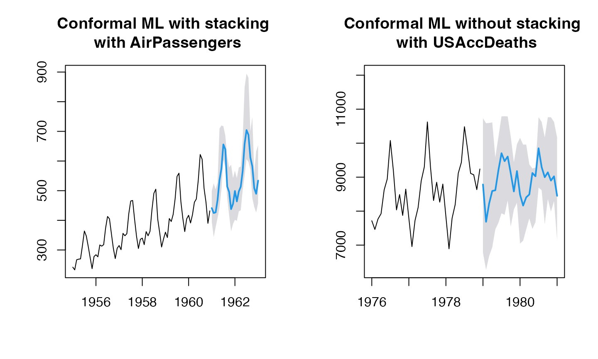

Conformalized Forecasting using Machine Leaning models – with stacked generalization
conformal-ml-stacking2.RmdWith Lasso and Ridge
fit_func_ridge <- function(x, y)
{
glmnet::cv.glmnet(x, y, alpha=0) # ridge
}
fit_func_lasso <- function(x, y)
{
glmnet::cv.glmnet(x, y, alpha=1) # lasso
}
stacking_models = list()
stacking_models[[1]] <- list(fit_func=fit_func_ridge, predict_func=predict)
stacking_models[[2]] <- list(fit_func=fit_func_lasso, predict_func=predict)
names(stacking_models) <- c("ridge", "lasso")
(res1 <- ahead::mlf(AirPassengers, h=25L, lags=20L, stack=FALSE, stacking_models=stacking_models))## Registered S3 method overwritten by 'quantmod':
## method from
## as.zoo.data.frame zoo## | | | 0% | |=================================== | 50% | |======================================================================| 100%## Point Forecast Lo 95 Hi 95
## Jan 1961 441.3340 395.3752 499.0496
## Feb 1961 424.6638 343.3237 524.7348
## Mar 1961 426.8820 376.6424 504.3861
## Apr 1961 468.6145 408.0317 528.0099
## May 1961 535.4421 443.6408 709.4886
## Jun 1961 574.9186 504.0377 719.7443
## Jul 1961 655.9370 604.7934 717.3988
## Aug 1961 639.3814 579.1002 685.9781
## Sep 1961 514.1038 475.8198 615.3769
## Oct 1961 495.6221 417.5763 578.3341
## Nov 1961 437.7525 362.7818 587.6955
## Dec 1961 455.5140 387.8163 542.7153
## Jan 1962 499.0358 401.8669 567.3251
## Feb 1962 463.7180 397.9928 542.2527
## Mar 1962 497.2568 429.9759 578.2685
## Apr 1962 513.2464 434.2234 581.0603
## May 1962 565.5730 501.6239 670.4829
## Jun 1962 657.1581 551.8738 847.8404
## Jul 1962 704.3373 606.6956 894.5974
## Aug 1962 688.3966 596.6527 880.6887
## Sep 1962 611.6104 570.4301 699.3725
## Oct 1962 582.1375 475.4416 748.3993
## Nov 1962 508.4588 445.0790 559.1812
## Dec 1962 489.4722 426.5378 632.7982
## Jan 1963 533.9907 458.5203 653.3869
(res2 <- ahead::mlf(AirPassengers, h=25L, lags=20L, stack=TRUE, stacking_models=stacking_models))## | | | 0% | |=================================== | 50% | |======================================================================| 100%## Point Forecast Lo 95 Hi 95
## Jan 1961 442.4967 396.5378 502.2355
## Feb 1961 422.0342 340.6941 519.9651
## Mar 1961 415.7970 365.5574 483.1084
## Apr 1961 445.4330 384.8502 484.3934
## May 1961 499.4043 407.6029 641.4283
## Jun 1961 526.0078 455.1268 628.2605
## Jul 1961 597.7149 546.5713 611.3792
## Aug 1961 579.8770 519.5958 578.8149
## Sep 1961 462.5991 424.3151 520.9792
## Oct 1961 456.5698 378.5241 505.3191
## Nov 1961 410.3150 335.3443 534.4739
## Dec 1961 434.5217 366.8241 502.1364
## Jan 1962 478.6214 381.4525 530.0119
## Feb 1962 437.6463 371.9211 493.0956
## Mar 1962 458.1397 390.8588 503.7298
## Apr 1962 455.8781 376.8552 473.4507
## May 1962 488.8837 424.9346 526.7456
## Jun 1962 561.4367 456.1525 670.4290
## Jul 1962 595.1999 497.5583 698.0764
## Aug 1962 578.2270 486.4831 685.1378
## Sep 1962 515.6943 474.5139 526.5854
## Oct 1962 507.4114 400.7155 611.2266
## Nov 1962 453.8056 390.4258 455.4875
## Dec 1962 445.7447 382.8104 550.1266
## Jan 1963 490.6881 415.2177 574.6573
(res3 <- ahead::mlf(USAccDeaths, h=25L, lags=20L, stack=FALSE, stacking_models=stacking_models))## | | | 0%## Warning: Option grouped=FALSE enforced in cv.glmnet, since < 3 observations per
## fold
## Warning: Option grouped=FALSE enforced in cv.glmnet, since < 3 observations per
## fold## | |=================================== | 50%## Warning: Option grouped=FALSE enforced in cv.glmnet, since < 3 observations per
## fold
## Warning: Option grouped=FALSE enforced in cv.glmnet, since < 3 observations per
## fold## | |======================================================================| 100%## Point Forecast Lo 95 Hi 95
## Jan 1979 8783.978 6774.983 10730.200
## Feb 1979 7686.613 6272.102 10586.531
## Mar 1979 8227.840 6680.574 10594.798
## Apr 1979 8593.016 6934.495 10611.109
## May 1979 8613.580 7463.120 9580.210
## Jun 1979 9204.017 7657.293 10181.523
## Jul 1979 9704.404 7935.751 10789.198
## Aug 1979 9469.413 7892.728 10791.384
## Sep 1979 9606.398 8313.995 10787.510
## Oct 1979 9109.509 7544.000 10184.456
## Nov 1979 8578.374 8048.086 9437.659
## Dec 1979 9179.610 8248.404 9968.920
## Jan 1980 8485.089 7046.743 10156.747
## Feb 1980 8163.319 7130.421 9957.499
## Mar 1980 8406.790 7463.555 9958.841
## Apr 1980 8489.861 7786.066 9377.161
## May 1980 9122.218 7475.319 9255.435
## Jun 1980 9025.400 7677.447 9282.899
## Jul 1980 9849.807 8692.713 10761.973
## Aug 1980 9295.242 8615.584 10626.719
## Sep 1980 8998.066 7614.688 10168.428
## Oct 1980 9141.270 8358.365 10763.456
## Nov 1980 8899.094 7985.921 10763.084
## Dec 1980 9023.866 8294.751 10627.499
## Jan 1981 8450.765 7141.203 10167.192
(res4 <- ahead::mlf(USAccDeaths, h=25L, lags=20L, stack=TRUE, stacking_models=stacking_models))## | | | 0%## Warning: Option grouped=FALSE enforced in cv.glmnet, since < 3 observations per
## fold
## Warning: Option grouped=FALSE enforced in cv.glmnet, since < 3 observations per
## fold## | |=================================== | 50%## Warning: Option grouped=FALSE enforced in cv.glmnet, since < 3 observations per
## fold
## Warning: Option grouped=FALSE enforced in cv.glmnet, since < 3 observations per
## fold## | |======================================================================| 100%## Point Forecast Lo 95 Hi 95
## Jan 1979 8859.537 6850.542 10709.683
## Feb 1979 7939.171 6524.660 10560.813
## Mar 1979 8380.617 6833.351 10572.648
## Apr 1979 8639.598 6981.076 10596.743
## May 1979 8605.403 7454.943 9575.829
## Jun 1979 9117.904 7571.181 10182.514
## Jul 1979 9555.868 7787.215 10796.567
## Aug 1979 9291.975 7715.290 10799.572
## Sep 1979 9446.910 8154.508 10793.589
## Oct 1979 9016.212 7450.704 10187.108
## Nov 1979 8541.782 8011.495 9434.164
## Dec 1979 9157.976 8226.770 9962.792
## Jan 1980 8607.131 7168.784 10145.879
## Feb 1980 8568.541 7535.642 9944.940
## Mar 1980 8683.679 7740.445 9946.664
## Apr 1980 8595.741 7891.946 9367.363
## May 1980 9111.881 7464.983 9248.263
## Jun 1980 8886.434 7538.481 9276.086
## Jul 1980 9620.441 8463.347 10756.312
## Aug 1980 8994.224 8314.566 10621.144
## Sep 1980 8703.698 7320.320 10163.801
## Oct 1980 8958.773 8175.868 10758.590
## Nov 1980 8822.299 7909.126 10757.777
## Dec 1980 8982.217 8253.102 10621.768
## Jan 1981 8590.411 7280.849 10161.094
(res5 <- ahead::mlf(fdeaths, h=25L, lags=20L, stack=FALSE, stacking_models=stacking_models))## | | | 0%## Warning: Option grouped=FALSE enforced in cv.glmnet, since < 3 observations per
## fold
## Warning: Option grouped=FALSE enforced in cv.glmnet, since < 3 observations per
## fold## | |=================================== | 50%## Warning: Option grouped=FALSE enforced in cv.glmnet, since < 3 observations per
## fold
## Warning: Option grouped=FALSE enforced in cv.glmnet, since < 3 observations per
## fold## | |======================================================================| 100%## Point Forecast Lo 95 Hi 95
## Jan 1980 620.3061 528.8686 817.9147
## Feb 1980 739.2103 539.4342 863.8038
## Mar 1980 651.2167 497.0214 843.2452
## Apr 1980 612.2699 468.9748 842.2928
## May 1980 528.4672 367.6401 816.0220
## Jun 1980 476.2447 351.3225 791.9043
## Jul 1980 446.5542 346.7205 731.5025
## Aug 1980 474.4832 306.2009 767.7123
## Sep 1980 433.9812 352.6265 674.2683
## Oct 1980 495.8515 375.0117 789.4303
## Nov 1980 608.1823 457.4200 801.6691
## Dec 1980 529.0414 416.2132 804.9594
## Jan 1981 606.6537 482.1669 834.3268
## Feb 1981 581.7082 467.1231 832.0112
## Mar 1981 568.9366 453.2338 829.7107
## Apr 1981 564.1498 440.0247 728.6246
## May 1981 498.3878 396.6910 819.2212
## Jun 1981 462.1132 357.5631 809.9911
## Jul 1981 466.7803 334.6223 747.7047
## Aug 1981 510.2115 350.2492 745.0392
## Sep 1981 462.1590 356.3739 801.7258
## Oct 1981 539.0785 362.8748 799.5830
## Nov 1981 539.8307 391.6486 804.5409
## Dec 1981 518.8222 445.6239 611.4196
## Jan 1982 612.5900 439.7018 818.6660
(res6 <- ahead::mlf(fdeaths, h=25L, lags=20L, stack=TRUE, stacking_models=stacking_models))## | | | 0%## Warning: Option grouped=FALSE enforced in cv.glmnet, since < 3 observations per
## fold
## Warning: Option grouped=FALSE enforced in cv.glmnet, since < 3 observations per
## fold## | |=================================== | 50%## Warning: Option grouped=FALSE enforced in cv.glmnet, since < 3 observations per
## fold
## Warning: Option grouped=FALSE enforced in cv.glmnet, since < 3 observations per
## fold## | |======================================================================| 100%## Point Forecast Lo 95 Hi 95
## Jan 1980 602.7431 511.3055 815.3558
## Feb 1980 722.0622 522.2862 858.7735
## Mar 1980 639.6291 485.4337 839.2106
## Apr 1980 609.1225 465.8275 841.9991
## May 1980 546.0493 385.2221 821.7550
## Jun 1980 506.1425 381.2202 804.0653
## Jul 1980 479.2389 379.4053 748.4499
## Aug 1980 507.8200 339.5377 787.0275
## Sep 1980 461.9156 380.5609 692.3895
## Oct 1980 515.8224 394.9826 803.7769
## Nov 1980 619.7334 468.9712 811.3908
## Dec 1980 532.0845 419.2563 810.2274
## Jan 1981 587.9108 463.4240 836.3023
## Feb 1981 563.5365 448.9514 832.5139
## Mar 1981 557.0433 441.3405 830.5164
## Apr 1981 564.4723 440.3472 731.3651
## May 1981 520.3859 418.6890 825.0199
## Jun 1981 500.5996 396.0494 818.9405
## Jul 1981 507.0400 374.8819 759.1424
## Aug 1981 550.0272 390.0649 757.6600
## Sep 1981 495.2858 389.5008 814.0055
## Oct 1981 562.4762 386.2725 810.4297
## Nov 1981 553.7348 405.5526 813.2684
## Dec 1981 523.6259 450.4276 617.9580
## Jan 1982 597.5811 424.6929 823.5020
(res7 <- ahead::mlf(WWWusage, h=25L, lags=20L, stack=FALSE, stacking_models=stacking_models))## | | | 0% | |=================================== | 50% | |======================================================================| 100%## Point Forecast Lo 95 Hi 95
## 101 188.63488 157.56696 298.2439
## 102 208.13203 149.54348 276.4635
## 103 188.30328 144.90225 270.1421
## 104 209.01866 145.17424 280.8966
## 105 176.63958 134.84520 266.7370
## 106 201.96181 139.86259 280.8837
## 107 201.54667 123.26914 276.5130
## 108 178.02670 120.41338 265.0872
## 109 173.19127 110.61818 252.6415
## 110 137.56535 102.83500 254.6571
## 111 153.41178 93.86811 245.5215
## 112 160.58596 88.54780 233.3655
## 113 148.77944 79.57773 229.0889
## 114 129.81313 72.92719 201.2045
## 115 136.03334 62.35849 209.1528
## 116 120.41680 54.39756 194.5360
## 117 130.77338 58.63183 181.6860
## 118 88.67783 37.12035 186.6475
## 119 90.15476 34.25110 171.5472
## 120 94.05708 31.16962 168.0137
## 121 121.61642 47.29433 180.1877
## 122 85.12684 34.24863 175.7188
## 123 83.37750 19.69135 171.6789
## 124 68.17726 14.77075 161.9726
## 125 76.25201 19.30806 153.3864
(res8 <- ahead::mlf(WWWusage, h=25L, lags=20L, stack=TRUE, stacking_models=stacking_models))## | | | 0% | |=================================== | 50% | |======================================================================| 100%## Point Forecast Lo 95 Hi 95
## 101 176.7774 145.70949 274.5766
## 102 197.6906 139.10202 255.4590
## 103 179.1997 135.79866 251.4799
## 104 201.3195 137.47505 264.6745
## 105 170.7220 128.92765 253.6381
## 106 197.9064 135.80723 270.9569
## 107 199.2328 120.95525 269.4754
## 108 177.6262 120.01286 261.2720
## 109 175.1163 112.54316 252.9118
## 110 142.3999 107.66954 260.2114
## 111 161.5323 101.98861 257.0301
## 112 171.8838 99.84567 250.4816
## 113 163.0245 93.82275 251.3373
## 114 147.2389 90.35295 229.0920
## 115 157.0681 83.39330 243.5318
## 116 145.2022 79.18300 235.6440
## 117 159.0880 86.94647 229.0047
## 118 120.0569 68.49940 239.3059
## 119 124.5240 68.62035 229.5066
## 120 131.4650 68.57753 231.4250
## 121 161.8942 87.57207 248.7999
## 122 127.4921 76.61389 248.1099
## 123 127.5819 63.89572 247.5166
## 124 113.8776 60.47108 240.7264
## 125 123.0509 66.10696 234.4215
par(mfrow=c(1, 2))
plot(res1, main="Conformal ML with stacking \n with AirPassengers")
plot(res3, main="Conformal ML without stacking \n with USAccDeaths")
par(mfrow=c(1, 2))
plot(res2, main="Conformal ML with stacking \n with AirPassengers")
plot(res4, main="Conformal ML without stacking \n with USAccDeaths")
par(mfrow=c(1, 2))
plot(res5, main="Conformal ML with stacking \n with fdeaths")
plot(res7, main="Conformal ML without stacking \n with WWWusage")